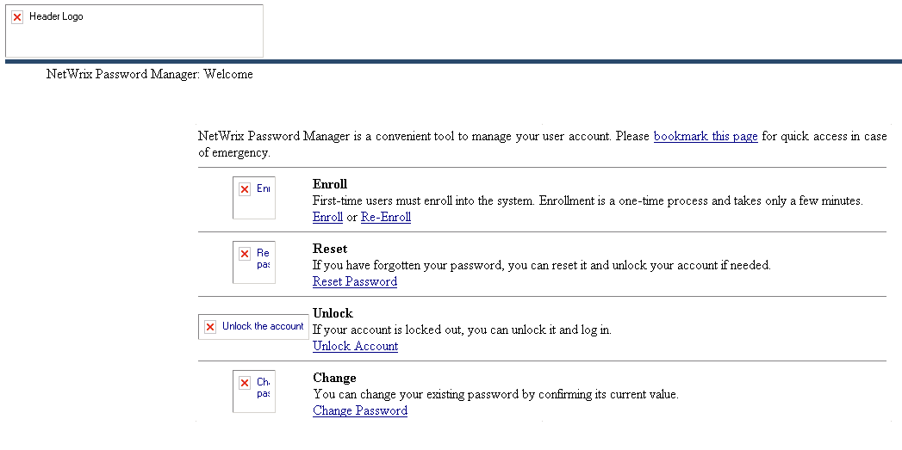

Question
Web Portal shows no images just red boxes. Whats the case?

Answer
The issue occurs because IIS cannot display images because of configuration.To address the issue, enable the Static content feature within IIS. In Windows 7:
- Go to Control panel - Programs and features - Turn Windows features on or off.
- Navigate to Internet Information Services (IIS) - World Wide Web Services - Common HTTP features.
- Make sure that the checkbox in front of the Static content is enabled.
- Navigate to Server manager - Roles - Web server, find the Role services in the right pane, click Add role services.
- Enable Static content under Common HTTP features.